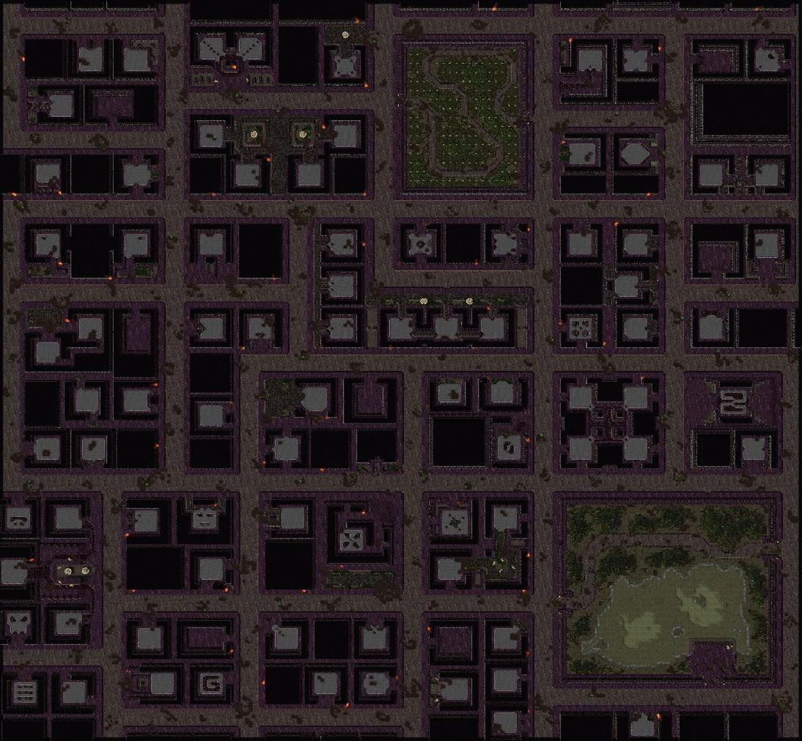

Select one then click anywhere on the map.
Hazmat
Blue Rad
Red Rad
B
Brown BoxesS
Silver BoxesX
ClearClick a dot to select it.
Press delete to remove it.
Click off map to deselect.
Dots can be dragged.
Select one then click anywhere on the map.
Click a dot to select it.
Press delete to remove it.
Click off map to deselect.
Dots can be dragged.